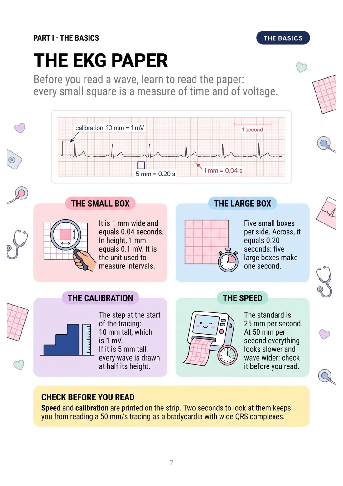

The Difference Is Visual
Stop staring at a tracing without knowing where to start:
FROM THIS
- Twelve leads and no order
- You don't know where to look
- The doubt comes when there's no time

TO THIS
- A method in eight steps
- The drawing shows you what to look for
- You recognise it at first glance